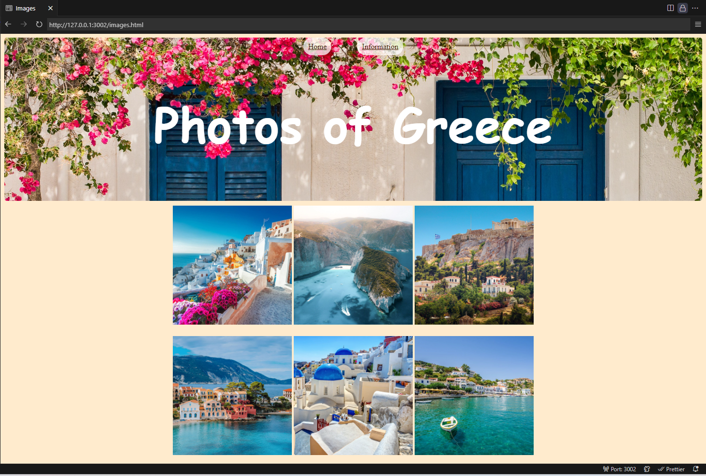
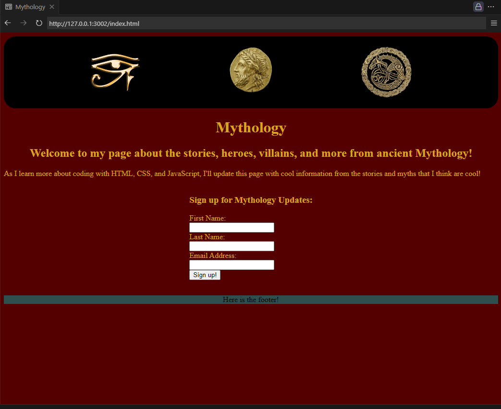
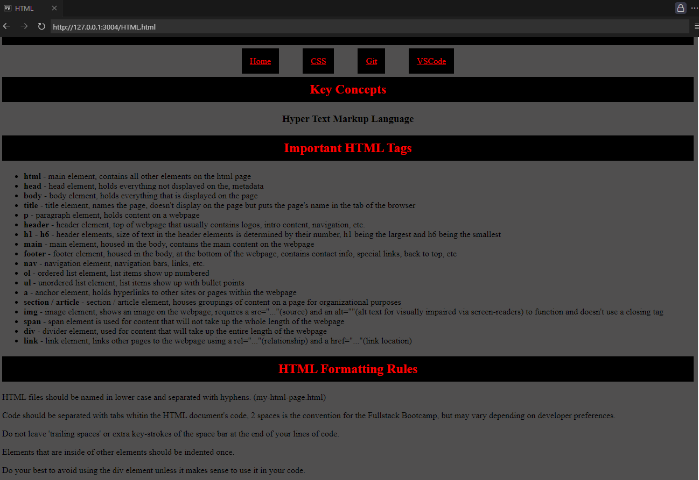

My Portfolio
Personal Project 'Greece'
My first personal project that I created using HTML and CSS. I chose the topic of Greece because I have always wanted to visit Greece, and have even thought of moving there to live for a time because I love the rich history and scenic landscapes of the country.
Personal Project 'Mythology'
My second personal project utilized Flex in CSS to position some of the elements on the page. This was also created using HTML and CSS. I have always been interested in mythology from around the world and look forward to putting together a site that can house all of the stories that I love.
Personal Project 'Study Guide'
The Study Guide site I created to both practice my skills in HTML and CSS, as well as catalogue all of the knowledge that I gain while taking the boot-camp through Fullstack Academy. As I compile everything I learn, I will go over the notes again and again all while using the skills I took notes about in the actual creation of the page!
